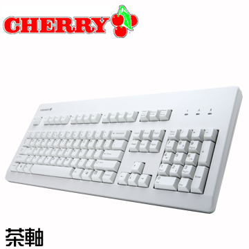
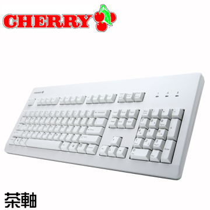

Cherry 原廠機械式鍵盤 G80-3000 |
- 商品預覽
- 產品規格
- 參考資料
|  | Cherry 原廠機械式鍵盤 G80-3000 (茶軸-英文)
◆ 此賣場為白色全英文鍵盤 本商品資訊取自:Pchome24
|
|---|


| Standard keyboard G80-3000 | |
商品包裝內含 |
系統要求 |
Cherry 原廠機械式鍵盤 G80-3000 |
|  | Cherry 原廠機械式鍵盤 G80-3000 (茶軸-英文)
◆ 此賣場為白色全英文鍵盤 本商品資訊取自:Pchome24
|
|---|
| Standard keyboard G80-3000 | |
商品包裝內含 |
系統要求 |